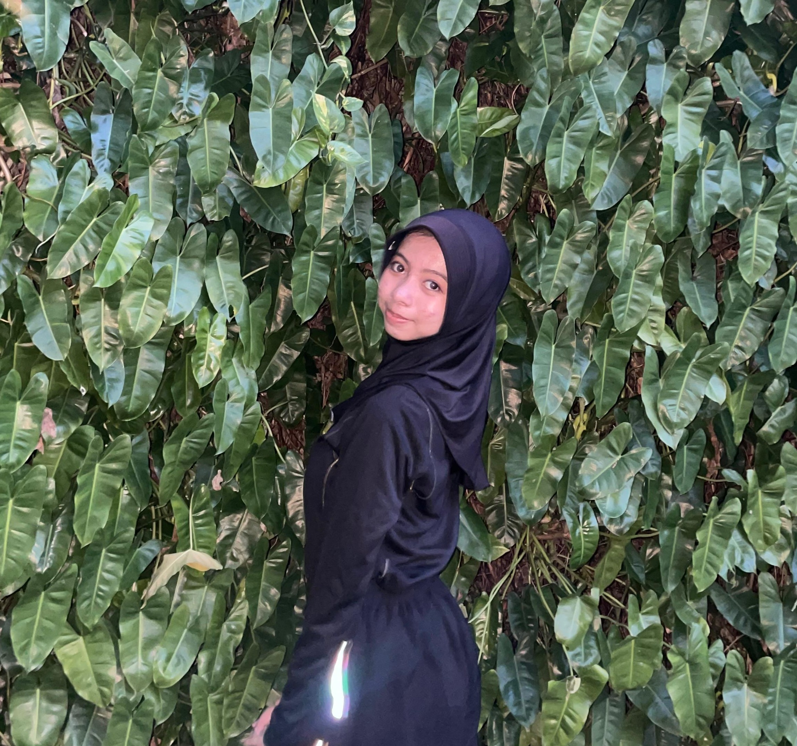
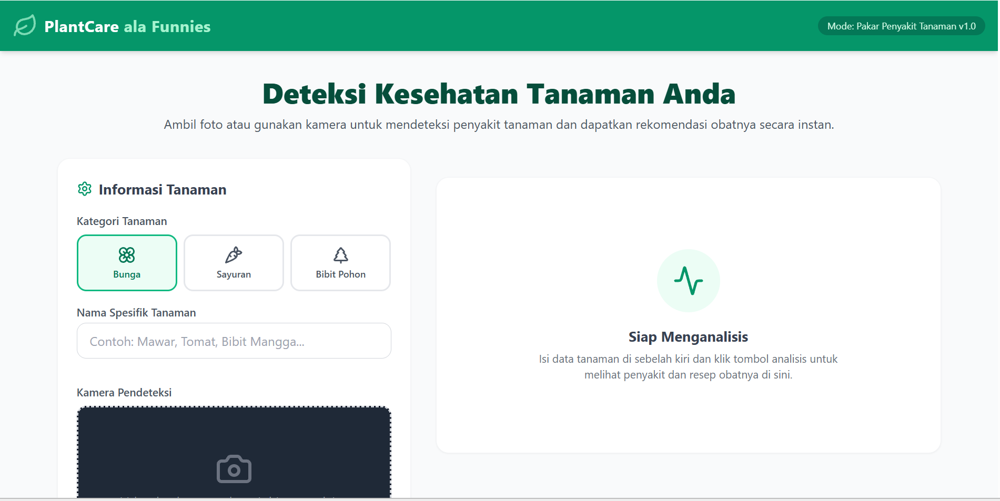
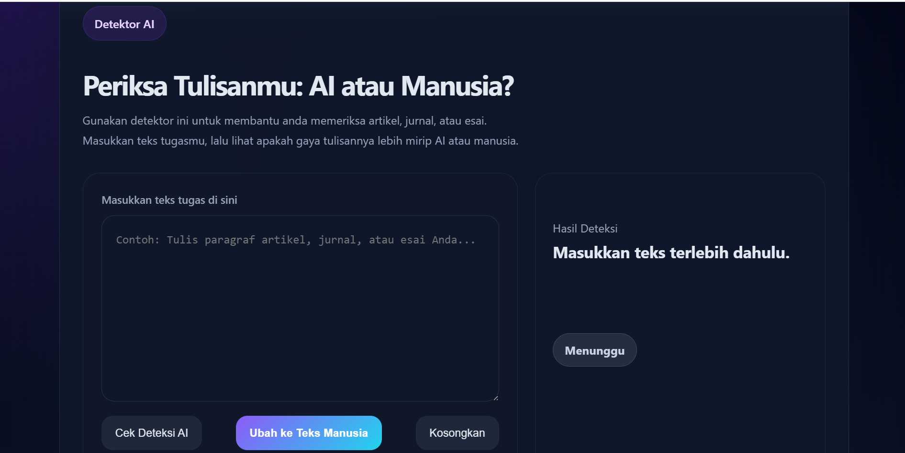
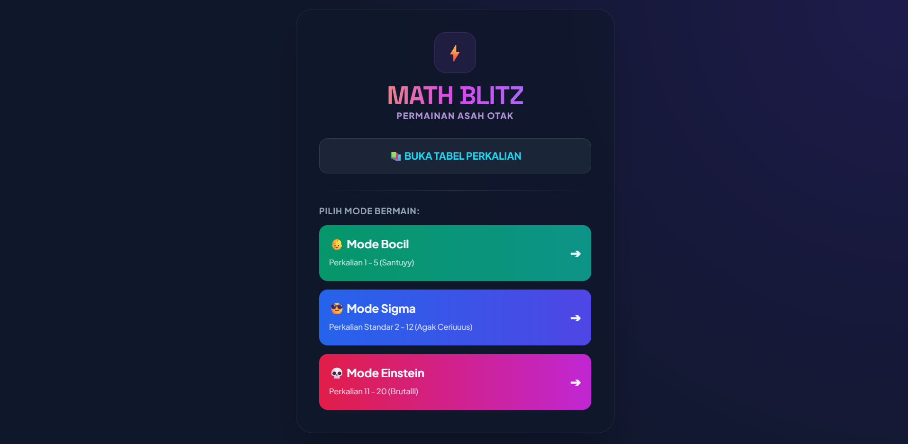

👋 Halo semuanya, saya
Seorang mahasiswi semester tiga di Universitas Negeri Yogyakarta dengan Program studi Teknologi Pendidikan.
Saya adalah pribadi yang suka belajar, dan suka mencoba hal baru. Saya memiliki ketertarikan pada pemanfaatan teknologi dan inovasi untuk menciptakan solusi yang bermanfaat. Saya senang mengeksplorasi ide-ide baru, mengembangkan keterampilan, dan menerapkannya dalam berbagai proyek maupun kegiatan organisasi.
Bagi saya, proses belajar tidak hanya tentang memperoleh pengetahuan, tetapi juga tentang menciptakan nilai dan dampak yang nyata.
_____________________________________________________

aplikasi berbasis web yang dirancang untuk membantu pengguna dalam merawat tanaman dengan simple.

Aplikasi berbasis web yang di rancang untuk memudahkan pelajar dalam mengerjakkan tugas.

Aplikasi berbasis web untuk latihan matematika secara interaktif.
Punya ide proyek menarik? Silakan hubungi saya, pintu kolaborasi selalu terbuka lebar.